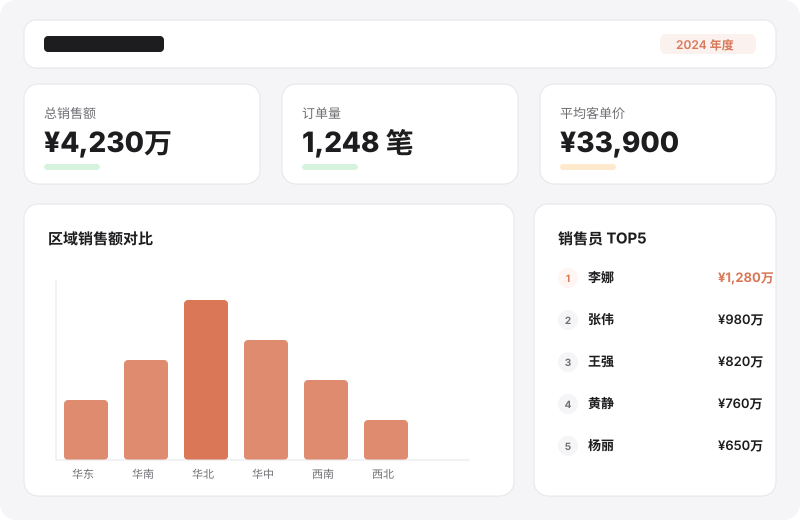
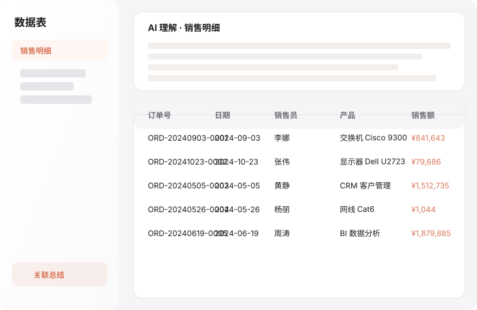
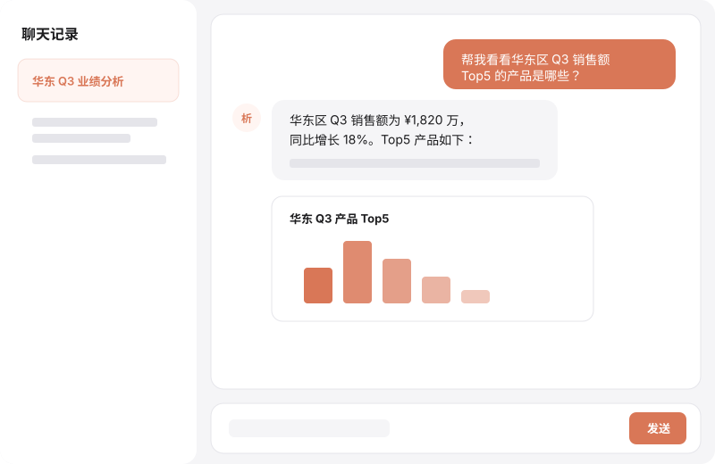

上传表格，AI 自动理解业务含义、发现多表关联、生成图表与报告。销售、运营、财务团队无需 SQL、无需数据仓库，像聊天一样直接追问数据。
已开源 MIT 协议 · 支持 FastAPI + Vue 3 · 可私有化部署

Parsight 把传统 BI 的「建模 → 写 SQL → 搭看板」压缩成一步：上传 Excel，剩下的交给 AI。
支持 .xlsx / .xls，自动识别 Sheet 结构、字段类型并写入 MySQL，无需手写建表语句。
对每张表进行六维业务理解，生成 Markdown 报告；发现理解偏差时可直接反馈修正。
在空间内自动分析多张 Excel 的关联关系，输出可执行的 SQL，业务人员也能核对。
基于理解结果自动推荐指标、维度与图表类型，生成 KPI、趋势、排名、占比等可交互图表。
快速洞察、深度研究、BI Builder 三种模式，用中文提问即可获取数据、图表与文字结论。
按空间隔离数据与项目，支持多成员协作；管理后台可配置 LLM、用户与审计日志。
任何需要把 Excel 数据快速变成结论的团队，都能省去重复做表和写公式的痛苦。
自动汇总各区域、销售员、产品线的业绩，生成排名、趋势与目标达成看板，告别手动透视表。
把订单、库存、客户行为表关联起来，快速发现异常波动、库存风险与转化瓶颈。
跨表自动核对收入、成本与目标，发现差异并给出 SQL 依据，提升对账效率。
按行业、区域、客户等级分群，自动输出产品表现与趋势建议，辅助决策。
把一张或多张表格上传到空间，系统自动解析字段、类型与数据。
生成单表业务理解、跨表关联关系，并自动推荐指标与维度。
一键生成 BI 看板，或通过聊天直接追问数据、下钻分析。
从数据管理、AI 理解、BI 看板到自然语言问答，全部在一个界面完成。


只需要 MySQL、Python 3.10+ 和 Node.js 18+。
git clone https://github.com/shaoxia20240902/Parsight.git
cd Parsight/backend && cp .env.example .env
# 编辑 backend/.env：配置 DATABASE_URL 与 JWT_SECRET_KEY
cd .. && ./start.sh
启动后访问 http://localhost:3000，默认管理员账号为 admin。登录后请在「管理后台 → LLM 配置」启用一条模型配置，AI 功能即可正常使用。